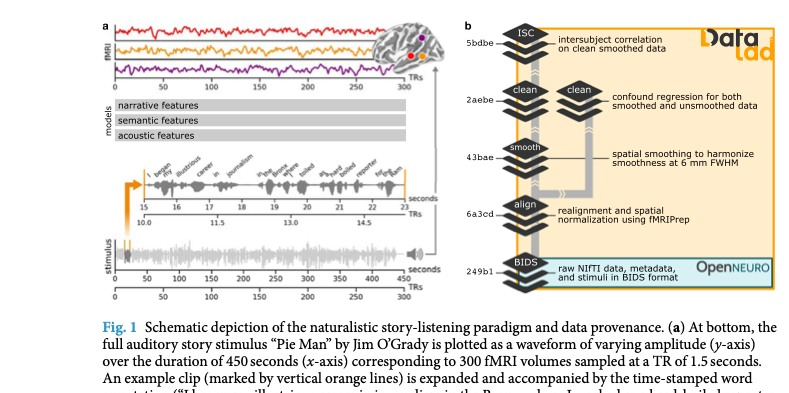
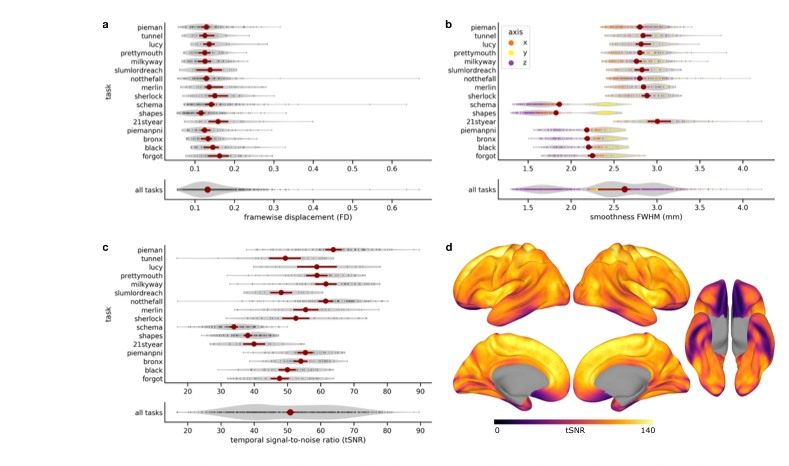
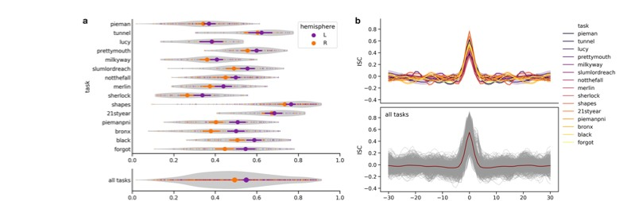
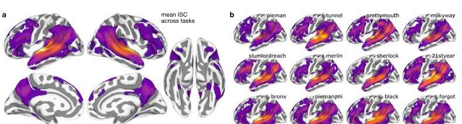

Narratives 用共享故事连接刺激模型与全脑反应
作者Samuel A. Nastase 等，Hasson/Norman 团队；完整作者见论文首页
出处Scientific Data 8, 250 (2021) · DOI
版本本地出版社 PDF，共 22 页；所有数据规模均指这篇论文的发布版本
资源OpenNeuro ds002345 · 官方代码，核对 commit 1736849ff80c
核心洞见同一故事提供跨人共同时间轴，完整的刺激、元数据和处理来源让脑反应既能作共享可靠性评估，也能被不同语言模型公平预测。
材料范围正文、表1、图1–4及官方脚本已核对；独立 Supplementary Table S1 附件未取得。下文公式是将分析流程显式化的教学推导，不是新增实测结果。
1. 数据论文建立的是可比较的测量基础
假设你想知道，一个语言模型的语义向量能否解释人听故事时的脑反应。最先需要的并不是更大的回归器，而是：人究竟听了哪一段音频，每个词何时出现，扫描何时采样，不同人的数据有没有对齐，以及结果是否超出基本测量可靠性。Narratives 将这些条件放在同一个可追踪的数据集合里。
这篇论文属于 Data Descriptor。核心贡献是数据、注释、处理和质量证据，不是提出一个击败全部语言模型的新算法。图 1 把两条路径并排呈现：刺激可以被声学、语义或叙事特征描述，再预测脑反应；原始 MRI 则经过配准、处理和去混杂，形成可复用的时间序列。【文中有据：Background & Summary，p.1–4】

ISC 在这里首先回答同一故事是否在不同人的相应脑区产生一致变化。编码模型进一步回答某一套具体特征能解释多少留出数据。前者不必事先知道刺激的正确表示，后者则把不同特征表示作为可竞争的假设。两者互补，不能把高 ISC 自动说成某个语言模型已经成立。
2. 345 人、891 次扫描和 27 个故事处在不同层级
| 论文规模 | 对应单位 | 分析含义 |
|---|---|---|
| 345 | 不同参与者 | 同一个人可能出现在多个任务或重复 run |
| 891 | 功能扫描 | 扫描数量不能直接替代独立参与者数量 |
| 27 | 故事刺激 | 部分按集合、版本或多个短故事组织 |
| 约 4.6 h，42,989 词 | 独特刺激总量 | 不是每个人都听了这么久 |
| 369,496 TR，约 6.4 天 | 跨人累计故事测量 | 重复呈现产生大量脑反应，但没有等比例增加新故事 |
数据在 2011–2018 年间收集，参与者年龄 18–53 岁，报告英语流利，包含母语与非母语者。所有研究 TR 都是 1.5 s，但扫描仪、线圈、空间分辨率和 multiband 设置有区别。相同时间采样间隔不能保证噪声、空间平滑或信噪比相同。【文中有据：Methods，p.2、5–6；Table 1，p.3】
Table 1 把相关故事合并成一些数据行。例如 Schema 是八个短故事；Milky Way 与 Shapes 有相关条件版本；总时长没有把所有版本和时间打乱材料重复相加。因此表格行数、27 个故事和 891 次扫描不应按同一种单位相互加减。决定一个 ISC 样本集时，必须追到具体 task、condition、run 和 subject。
3. 每个故事子集保留了自己的实验设计
| 数据子集 | 原有结构 | 初次分析时的决定 |
|---|---|---|
| Pie Man，82 人 | 部分人两次听同一刺激，扫描 300 TR | 把被试和 run 分开，避免把两次扫描当独立人 |
| Tunnel / Lucy | 23 / 16 人，参与者部分重叠 | 跨故事泛化需检查 subject overlap |
| Pretty Mouth，40 人 | 相同音频，affair / paranoia 各 20 人 | 研究上下文时保留组别，不能混成无条件重复 |
| Milky Way，53 人 | original / vodka / synonyms，含不同叙事与替换词 | 同一任务别名不等于完全相同刺激 |
| Slumlord / Reach，18 人 | 两段故事位于同一次扫描 | 按 events 切开，不能把第二段时间从零重新猜 |
| Not the Fall，56 人 | intact 与粗/细打乱的混合设计 | 叙事分析优先完整版本，比较条件时保留配对 |
| Merlin / Sherlock，36 人 | 先看对应影视或另一影视，再听他人回忆 | 发布的是听回忆数据，未提供该发布中的观看与说话者扫描 |
| Schema，31 人 | 八个短故事，四个 run 中含其他刺激 | 按单次 events 提取，不能直接整 run 相关 |
| Shapes，59 人 | physical / social 描述与观看顺序交叉 | 先前看过动画会改变当前听故事的经验 |
| 21st Year，25 人 | 约 56 分钟，两条线索逐渐汇合 | 适合长上下文问题，仍需处理时间自相关 |
| Pie Man PNI / Bronx / Black / Bradbury | 共同招募样本，扫描启动与故事起点不同 | 分别检查采样覆盖、音频版本与起始偏移 |
【文中有据：Narratives datasets，p.7–12】Pie Man PNI 和原始 Pie Man 讲的是同一个故事，但讲述速度与时间结构不同。直接把第 100 个 TR 对齐，并不能把同一段剧情对齐。也不应将不同故事的第 100 个 TR 相关，称为共享语言反应；普通 temporal ISC 需要有内容和时间对应的输入。
论文有几处可手算识别的时长笔误。例如 Merlin 的 915 s 在叙述中括注 9.25 min，但 $915/60=15.25$；Milky Way 的 21 s 引导段在文字里括注 21 TR，而 $21/1.5=14$ TR。做分析时应以具体音频、BIDS events 和数组维度联合核对，避免把段落中的括号数字直接写进切片程序。
4. 音频时间、扫描时间与血流响应分三步对齐
Gentle 产生的词起止时间都以音频文件开头为零点；BIDS events 指出音频或故事相对扫描的开始。另一些音频本身含音乐和静音。第一步是把词的音频坐标转成扫描坐标，第二步决定落在哪个采样 bin，第三步才考虑 BOLD 的血流动力学延迟。
$t_k^{\mathrm{audio}}$ 为第 $k$ 词在音频中的 onset，单位 s；$o_{\mathrm{audio}}^{\mathrm{scan}}$ 是音频相对扫描的起点；$n_k$ 是从零计数的 TR bin。若 events 已直接给出故事 onset，就不要再加一次故事前音乐。精确实现还需明确用体积开始、中心还是切片时间作参考，以及跨 bin 的词如何加权。
【教学示例】若音频在扫描 3 s 后开始，一个词位于音频 10.2 s，则扫描时间为 13.2 s；TR=1.5 s 时落在 $[12,13.5)$ 的第 8 号零基 bin。若又误加 15 s 的故事引导，就整体错开 10 TR，即使每个人的扫描都是 1.5 s 一帧。
$f_{kd}$ 是第 $k$ 词的第 $d$ 维特征，$s_d$ 是带特征权重的事件序列，$h$ 是 HRF，$q_d$ 为与血流测量对应的连续预测量。接着按 fMRI 的 TR 采样或积分，构造 $Q\in\mathbb R^{T\times D}$。也可采用多个有限滞后基，交给模型学习时间响应；这属于后续建模选择，原论文的质量 ISC 不需要自己假定 HRF，因为其他人的 BOLD 已经包含血流反应。
原始 Pie Man 的音频从扫描开始播放，文件前 13 s 为音乐、2 s 静音，故事从音频 15 s 开始，扫描共 450 s。表 1 的故事时长是约 422 s；不能据此误认为 300 TR 全是正文。Tunnel 和 Lucy 的音频在 2 TR 后开始，后来的 Black 和 Bradbury 有 8 TR 的启动静音。时间轴必须逐任务核对。
【教学预演】若听觉区 ISC 看起来仍不错，但词特征的 encoding 峰落在奇怪的滞后，先核对音频偏移是否加了两遍，再检查是否把 HRF 延迟当作采集偏差。用相关最大化偷偷把每个人都平移到最好位置，会把时延诊断变成数据驱动优化；如要采用该步骤，应放进事先定义的训练与验证流程。
5. 预处理的输出空间和残差模型共同定义数据
作者使用 fMRIPrep 20.0.5 处理，输出多套体积模板与 fsaverage 系列表面空间。配准、运动和畸变修正合成后尽量只插值一次，减少重复重采样。之后分别保留不平滑和目标整体平滑度 6 mm FWHM 的版本，再用 AFNI 做混杂回归。【文中有据：MRI preprocessing，p.5–7】
平滑到 6 mm FWHM 是使全局平滑度达到一个目标，不等于任何输入上都简单追加同一个 6 mm kernel。它改善粗粒度跨人对应，也降低局部空间特异性。论文质量图中的 EAC 使用不平滑时间序列，全脑 vertex-wise ISC 图使用平滑数据；二者数值不能忽略这些条件直接比较。
| 量 | 形状 | 含义 |
|---|---|---|
| $Y$ | $T\times V$ | 一个 run 的 BOLD 时间序列 |
| $C$ | $T\times K$ | 混杂、滤波基与趋势项 |
| $B$ | $K\times V$ | 各体素的混杂回归系数 |
| $E$ | $T\times V$ | 剩余时间序列，不等于纯神经活动 |
回归模型包含 6 个运动参数、CSF 和 WM 各前 5 个 aCompCor 成分、128 s 高通 cosine 基以及一、二阶趋势。$C^+$ 是伪逆，因此在列不完全独立时仍能定义最小二乘投影。所有项在单个模型里处理，防止顺序滤波重新引入某些混杂。
【教学示例】若只有一个中心化混杂向量 $c=(1,-1,1,-1)$，观测 $y=2c+(1,1,-1,-1)$，则 $\widehat b=(c^{\mathsf T}y)/(c^{\mathsf T}c)=8/4=2$，残差为 $(1,1,-1,-1)$。回归移除了与 $c$ 同方向的部分；如果真正的刺激反应也沿着 $c$，它同样会被拿走。所以去混杂是依赖模型的分离，不是无损提纯。
6. 图 2 区分运动、空间平滑和时间信噪比

图 2A 的 framewise displacement（FD）衡量相邻体积之间估计的头部位置变化；图 2B 描述原始图像沿不同轴的空间平滑；图 2C/D 是 tSNR。不同指标回答不同问题：一个人头动不大，不保证某个前颞区域没有磁敏感信号脱落；空间分辨率更高，也可能因为体素更小而具有较低 tSNR。
分子是原信号时间均值，分母是时间标准差。假设一个体素均值 100、标准差 2，则 tSNR=50。它不是刺激可解释方差：一条稳定、但不跟随故事变化的曲线也可能有高 tSNR。对去均值后的 clean residual 直接算这条式子，会把分子变成接近零，不能与原论文基于相应预处理状态的指标比较。
论文报告跨扫描 FD 中位数约 0.132 mm，tSNR 中位数约 50.772。正文和图2图注对个别 FD 的 mean/median 汇总用语并非完全一致，因此精确复算时需检查保存的 MRIQC 输出和 plot_qc.py。图 2 的重点是保留扫描之间的分布及协议差异，而非用一个总数字保证全部 run 质量相同。【文中有据：Technical Validation，p.13–14】
作者没有因这些 IQM 自动把人从公开集合删除。用户可根据目标预先定义排除规则。这让方法比较也可研究较低质量扫描，但不能把已公开理解成已适合每一种分析。
7. 图 3 的 LOO ISC 给出故事锁定的可靠性
对同一故事、相应条件与同一空间位置，数据为 $X\in\mathbb R^{T\times V\times N}$。一个人对其余人的平均：
Pearson 的分子是两条去均值曲线的内积，分母是向量长度乘积，所以它比较形状而非整体振幅。$r=1$ 表示正线性形状完全一致，$r\approx0$ 表示没有检测到线性同步，常数序列的相关则未定义。LOO 会降低参照噪声，因此通常高于直接两人相关。
作者先 Fisher z 变换再平均，最后 inverse Fisher 回到相关单位。这里的 z 作用于相关值，不是时间序列 z-score。只分析故事实际呈现的体积，并额外去掉故事开始后的 6 TR，即 9 s，减少共同开场瞬变。不同条件是否分组计算，也按原始实验安排区分。

图 3A 汇总左右早期听觉皮层（EAC）的 LOO ISC，EAC ROI 由多模态图谱中的 A1、MBelt、LBelt、PBelt、RI 合并。论文报告左右 EAC 跨扫描均值分别约 0.549 和 0.493。更高左侧同步与语言刺激相容，但这张质量图本身没有独立隔离音韵、语义或注意的贡献。
噪声上限是带假设的参照
设一人的单位方差信号 $x_i=\sqrt p\,c+\sqrt{1-p}\,n_i$，共享波形 $c$ 与个体噪声都标准化、彼此独立。足够多人平均后噪声接近抵消，因此 $r(x_i,c)=\sqrt p$，而 $r^2=p$。这说明理想的共享刺激模型不必达到相关 1，因为目标包含不可由群体共享模型预测的部分。
有限样本的群体参照仍带噪声，LOO 也不是任何模型永远不能超越的严格界。个体模型可能抓住稳定的个体反应；更好的刺激模型可能比有限人数平均更干净。若比较模型与 noise ceiling，需使目标数据、ROI、预处理和时间窗一致，不能简单把两个相关值相除就称为独特解释率。
8. 滞后扫描识别时间错位，不自动修复它
为检查某个人是否整体晚了或早了，作者在左 EAC 扫描 −30 到 +30 TR，共 61 个 lag，即 −45 到 +45 s。设被试曲线相对参考移动 $\ell$ 个 TR：
这是本稿明确采用的符号约定：正 $\ell$ 取目标被试更晚的样本。官方 roi_lags.py 的 circular 分支采用循环拼接，显示的正负号需要按该实现的拼接方向解释，不能拿另一篇论文的约定直接套过来。循环移位还将尾部接到开头，实际生理时间没有这个环；诊断时可同时检查非循环重叠部分。
拖动目标曲线相对参照的时间偏移，观察同一段示意刺激的两条曲线怎样失去零延迟同步。示意数据没有 HRF 个体差异，不代表原论文某位被试。
横轴是共同扫描时间。移动的是目标曲线，零延迟相关随之改变；应先明确坐标，再解释最佳 lag。
两个排除标准是：左 EAC 的零延迟 ISC 低于 0.10，或峰值 lag 的绝对值超过 3 TR（4.5 s）。合计标记 19 人的 27 次扫描，占 891 次的约 3.0%。这些扫描仍保留在发布数据中，scan_exclude.json 提供建议名单。作者没有为了使峰值对齐而平移或剪改公开扫描。【文中有据：p.14–15】
【教学预演】若目标是比较两个条件的语言处理时间差，先按盲于条件或事先规定的规则检查采集偏移，再讨论神经 lag。若每组都用结果最大化来平移，可能恰好删掉你要研究的时间差。反过来，完全不核对采集时钟，也会把技术错位误读成神经差异。
9. 图 4 的 0.10 是展示阈值

图 4A 是跨故事汇总的 vertex-wise ISC，图 4B 是 12 个代表性故事。分布包括双侧听觉、颞叶、额叶及部分 DMN 区域。不同故事仍呈相似的共享反应分布，说明这些自然叙事能稳定招募广泛系统。
原文明确指出：这里不做统计显著性检验，ISC=0.10 是任意选择的可视化阈值。它与图 3 中用于扫描质量筛查的 0.10 同数值，却不是同一种推断。图上有颜色不等于经过 FDR，空白也不等于区域不处理语言。【文中有据：p.15–16】
对于后续科学假设，可以使用保持时间自相关的相位/时间随机化，或保留被试依赖的 bootstrap、标签置换，并对 ROI 或全脑检验族控制错误率。一个数据资源的质量地图不需要承担所有这些后续检验，但使用者需要自己建立与目标主张匹配的统计流程。
10. 从词级特征到留出故事的编码模型
如果把故事词特征经对齐和时间处理后组织为 $Q\in\mathbb R^{T\times D}$，一个区域的反应为 $y\in\mathbb R^T$，最简单的编码模型是 $\hat y=Qw+b$。$w\in\mathbb R^D$ 是特征权重，$b$ 为截距。高维特征通常需要正则化：
这里将训练部分中心化以省略截距，$I$ 为 $D\times D$ 单位矩阵。平方误差要求预测贴近观测；$\lambda\geq0$ 惩罚过大的权重，缓解特征共线与高维过拟合。标准化、PCA、正则强度、特征层和时间 lag 都必须由训练或内层验证确定，不能用最终测试故事来选择。
| 切分方式 | 主要检验 | 需要控制 |
|---|---|---|
| 同一故事留出连续时段 | 该刺激内新时间点的预测 | 滤波与 HRF 的跨边界重叠、相邻窗口依赖 |
| 留出参与者 | 对新人的推广 | 测试人的数据不能进入参照拟合或功能对齐训练 |
| 留出故事 | 对新叙事和内容的推广 | 独立调参，检查讲述者、协议和被试重叠 |
| 留出故事且留出参与者 | 两种分布同时变化 | 训练、选择、对齐和测试的完整隔离 |
这部分是从数据结构推出的分析路径，不是这篇数据论文已经完成的统一基准实验。数据多来自年轻、英语流利的成年人，故事数量也远少于时间点数量。针对新故事的结论应以故事作为相应的推广单位，不能靠许多重叠窗口假装获得同样数量的独立叙事。
11. 官方脚本让来源核对落到具体操作
| 文件 | 本次静态核对到的行为 | 对应阅读位置 |
|---|---|---|
run_isc.py | 按 event_meta 切故事，再删 6 TR；组装为 time×vertex×scan，调用 isc | 时间轴和图4 |
extract_confounds.py | 6 运动参数、cosine、CSF/WM 各 5 个 aCompCor | 残差模型 |
roi_lags.py | 逐 lag 构造目标曲线与 LOO 均值，计算峰值位置 | 图3时间诊断 |
scan_exclude.json | 以 task/run 标记建议排除扫描 | 质量规则，不代表删除原数据 |
task_meta.json / event_meta.json | 任务成员、文件和切片时间信息 | 数据的实际采样结构 |
代码中的 base_dir 指向作者集群目录，直接运行前要配置路径。run_isc.py 会枚举同一个人的多个 run 并堆叠，这意味着分析使用者需要明确自己的独立单位；如检验参与者总体，应避免把重复 run 当作互不相关的人。当前仓库快照的核对不能代替固定论文当年的数据与代码版本，也不构成已复现结果。
12. 完整刺激记录让共享反应能够被解释
Gentle 提供 CSV 与 JSON 词/音素时间戳。论文总计 789 个词（约 1.8%）未成功定位，651 个词（约 1.5%）不在词表；这些类别可能重叠，不能简单相加当作错误率。没有 onset 的词不能默认填成 0 s；不同处理方式会改变特征事件的分布。
脑影像和元数据按 CC0 共享，刺激音频的使用说明另有面向非商业学术用途的来源约束；不要把整个材料包所有部分都理解成同一许可。DataLad 可以追踪处理阶段与内容版本，BIDS 则负责主体、任务、run、采集参数和 events 的结构。它们解决的是不同层面的可复用性。
Narratives 的最强价值，是让同一个观测既能问跨人是否一致，也能问哪种刺激表示能够解释这种一致。真正进入分析时，第一份结果应来自一个明确故事与条件、一套明确预处理、一个可追踪时间轴和一组明确独立单位。这个起点确定之后，大规模建模才有可比较的含义。